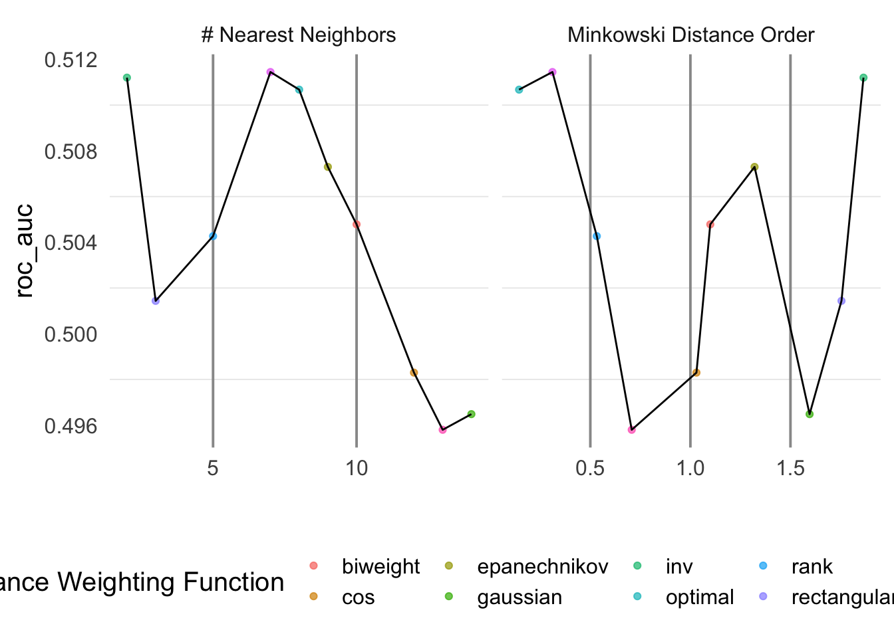

## # A tibble: 5,640 × 12
## `.pred_0-6` `.pred_13-18` `.pred_19-24` `.pred_25-30` `.pred_7-12` .row neighbors
## <dbl> <dbl> <dbl> <dbl> <dbl> <int> <int>
## 1 0.5 0.5 0 0 0 10 2
## 2 1 0 0 0 0 23 2
## 3 1 0 0 0 0 24 2
## 4 1 0 0 0 0 26 2
## 5 0.5 0.5 0 0 0 35 2
## 6 1 0 0 0 0 37 2
## 7 0 0.5 0 0.5 0 38 2
## 8 1 0 0 0 0 40 2
## 9 1 0 0 0 0 49 2
## 10 1 0 0 0 0 58 2
## # … with 5,630 more rows, and 5 more variables: weight_func <chr>, dist_power <dbl>,
## # .pred_class <fct>, rtl_group <fct>, .config <chr>## # A tibble: 5,640 × 13
## id `.pred_0-6` `.pred_13-18` `.pred_19-24` `.pred_25-30` `.pred_7-12` .row neighbors
## <chr> <dbl> <dbl> <dbl> <dbl> <dbl> <int> <int>
## 1 Fold01 0.5 0.5 0 0 0 10 2
## 2 Fold01 1 0 0 0 0 23 2
## 3 Fold01 1 0 0 0 0 24 2
## 4 Fold01 1 0 0 0 0 26 2
## 5 Fold01 0.5 0.5 0 0 0 35 2
## 6 Fold01 1 0 0 0 0 37 2
## 7 Fold01 0 0.5 0 0.5 0 38 2
## 8 Fold01 1 0 0 0 0 40 2
## 9 Fold01 1 0 0 0 0 49 2
## 10 Fold01 1 0 0 0 0 58 2
## # … with 5,630 more rows, and 5 more variables: weight_func <chr>, dist_power <dbl>,
## # .pred_class <fct>, rtl_group <fct>, .config <chr>The model generated a best roc_auc value of 0.542 with a value of K = 11
## # A tibble: 10 × 9
## neighbors weight_func dist_power .metric .estimator mean n std_err .config
## <int> <chr> <dbl> <chr> <chr> <dbl> <int> <dbl> <chr>
## 1 11 cos 1.46 roc_auc hand_till 0.542 10 0.0136 Preprocessor1_Model…
## 2 14 optimal 0.359 roc_auc hand_till 0.540 10 0.0123 Preprocessor1_Model…
## 3 12 epanechnikov 0.222 roc_auc hand_till 0.540 10 0.0102 Preprocessor1_Model…
## 4 8 triangular 1.11 roc_auc hand_till 0.536 10 0.0113 Preprocessor1_Model…
## 5 8 triweight 1.73 roc_auc hand_till 0.535 10 0.0115 Preprocessor1_Model…
## 6 13 rectangular 0.907 roc_auc hand_till 0.534 10 0.0102 Preprocessor1_Model…
## 7 2 biweight 0.829 roc_auc hand_till 0.523 10 0.00456 Preprocessor1_Model…
## 8 6 gaussian 1.39 roc_auc hand_till 0.519 10 0.00879 Preprocessor1_Model…
## 9 3 inv 1.93 roc_auc hand_till 0.516 10 0.00541 Preprocessor1_Model…
## 10 5 rank 0.521 roc_auc hand_till 0.516 10 0.00997 Preprocessor1_Model…After fitting the model, the roc_auc increases to 0.568 with low accuracy
## # A tibble: 2 × 4
## .metric .estimator .estimate .config
## <chr> <chr> <dbl> <chr>
## 1 accuracy multiclass 0.204 Preprocessor1_Model1
## 2 roc_auc hand_till 0.568 Preprocessor1_Model1## Truth
## Prediction 0-6 13-18 19-24 25-30 7-12
## 0-6 35 45 27 5 65
## 13-18 0 2 3 1 5
## 19-24 0 0 0 0 0
## 25-30 0 0 0 0 0
## 7-12 1 0 0 0 2## # A tibble: 5,650 × 9
## `.pred_0-12` `.pred_13-30` .row neighbors weight_func dist_power .pred_class rtl_group
## <dbl> <dbl> <int> <int> <chr> <dbl> <fct> <fct>
## 1 1 0 10 10 biweight 1.10 0-12 0-12
## 2 1 0 23 10 biweight 1.10 0-12 0-12
## 3 1 0 24 10 biweight 1.10 0-12 0-12
## 4 1 0 26 10 biweight 1.10 0-12 0-12
## 5 1 0 35 10 biweight 1.10 0-12 0-12
## 6 1 0 37 10 biweight 1.10 0-12 0-12
## 7 1 0 38 10 biweight 1.10 0-12 0-12
## 8 1 0 40 10 biweight 1.10 0-12 0-12
## 9 1 0 49 10 biweight 1.10 0-12 0-12
## 10 1 0 58 10 biweight 1.10 0-12 0-12
## # … with 5,640 more rows, and 1 more variable: .config <chr>## # A tibble: 5,650 × 10
## id `.pred_0-12` `.pred_13-30` .row neighbors weight_func dist_power .pred_class rtl_group
## <chr> <dbl> <dbl> <int> <int> <chr> <dbl> <fct> <fct>
## 1 Fold01 1 0 10 10 biweight 1.10 0-12 0-12
## 2 Fold01 1 0 23 10 biweight 1.10 0-12 0-12
## 3 Fold01 1 0 24 10 biweight 1.10 0-12 0-12
## 4 Fold01 1 0 26 10 biweight 1.10 0-12 0-12
## 5 Fold01 1 0 35 10 biweight 1.10 0-12 0-12
## 6 Fold01 1 0 37 10 biweight 1.10 0-12 0-12
## 7 Fold01 1 0 38 10 biweight 1.10 0-12 0-12
## 8 Fold01 1 0 40 10 biweight 1.10 0-12 0-12
## 9 Fold01 1 0 49 10 biweight 1.10 0-12 0-12
## 10 Fold01 1 0 58 10 biweight 1.10 0-12 0-12
## # … with 5,640 more rows, and 1 more variable: .config <chr>The model generated a best roc_auc value of 0.514 with a value of K = 4
## # A tibble: 10 × 9
## neighbors weight_func dist_power .metric .estimator mean n std_err .config
## <int> <chr> <dbl> <chr> <chr> <dbl> <int> <dbl> <chr>
## 1 7 triangular 0.311 roc_auc binary 0.511 10 0.0131 Preprocessor1_Model…
## 2 2 inv 1.87 roc_auc binary 0.511 10 0.00454 Preprocessor1_Model…
## 3 8 optimal 0.144 roc_auc binary 0.511 10 0.0124 Preprocessor1_Model…
## 4 9 epanechnikov 1.32 roc_auc binary 0.507 10 0.0125 Preprocessor1_Model…
## 5 10 biweight 1.10 roc_auc binary 0.505 10 0.0127 Preprocessor1_Model…
## 6 5 rank 0.532 roc_auc binary 0.504 10 0.0136 Preprocessor1_Model…
## 7 3 rectangular 1.76 roc_auc binary 0.501 10 0.00604 Preprocessor1_Model…
## 8 12 cos 1.03 roc_auc binary 0.498 10 0.0166 Preprocessor1_Model…
## 9 14 gaussian 1.60 roc_auc binary 0.496 10 0.0171 Preprocessor1_Model…
## 10 13 triweight 0.707 roc_auc binary 0.496 10 0.0169 Preprocessor1_Model…
After fitting the model, the roc_auc increases to 0.525 but much more accurate than 5-leveled model.
## # A tibble: 2 × 4
## .metric .estimator .estimate .config
## <chr> <chr> <dbl> <chr>
## 1 accuracy binary 0.584 Preprocessor1_Model1
## 2 roc_auc binary 0.534 Preprocessor1_Model1## Truth
## Prediction 0-12 13-30
## 0-12 106 79
## 13-30 0 5